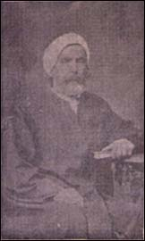

Hoca Tahsin (1811-1881)

Bediüzzaman'ýn Ýttihad-ý Ýslam'da selefleri arasýnda gösterdiði Hoca Tahsin'in asýl adý Hasan Tahsin'dir. On dokuzuncu asrýn önemli fikir adamlarýndandýr. Ulema sýnýfýna mensup olduðu gibi tabii ilimlerde de önemli bilgilere sahip birisi olarak tanýnmýþtýr. Darülfünun'un (üniversite) ilk müdürüdür. Uzun süre Avrupa'da kalarak oradaki ilmi geliþmelerden faydalanma imkanýný elde etmiþtir. Yeni Osmanlýlara yakýn olmakla beraber siyasi faaliyetlerinden uzak kalmaya itina göstermiþtir.Hasan Tahsin, 1811 yýlýnda Yanya bölgesinde bulunan Filat kazasýnýn Ninat köyünde doðdu. Müderris Osman Efendinin oðludur. Eðitimine babasýndan aldýðý din ve edebiyat dersleriyle baþladý. Daha iyi medrese eðitimi için memleketinden Ýstanbul'a geldi. Müderris Vidin'li Hoca Mustafa Efendinin derslerini takip ederek mezun oldu. 1856 yýlýnda Avrupa'ya gönderilmesi gündeme gelinceye kadar geçen 45 yýllýk hayat süreci hakkýnda fazla bilgi mevcut deðildir.
Osmanlý idaresi yurt dýþýna gönderdiði Türk öðrencilerine din eðitiminin verilmesi, Arapça ve Farsça bilgilerinin geliþtirilmesi, ayrýca öðrenim maksadýyla yurt dýþýnda bulunan gayrimüslim vatandaþlarýn Türkçe'yi öðrenmelerini saðlayacak tedbirler almayý kararlaþtýrdý. Bu maksatla düþünülen isimlerden birisi Hoca Tahsin, diðeri ise Selim Sabit oldu. Bu hocalar hem yurt dýþýnda bulunan öðrencileri disiplin altýna almalarýný saðlayacaklar, hem de ileride açýlmasý düþünülen darülfünunda görevlendirilmeleri için yetiþmiþ olmalarý saðlanacaktý. Böylece gönderildikleri Paris'e 20 Mart 1857 tarihinde vararak, orada bulunan Mekteb-i Osmani'de hoca olarak görevlendirildiler.
Hasan Tahsin, Paris'te bulunduðu süre zarfýnda modern ilimlerle ilgilenerek çeþitli alanlarda bilgisini arttýrmaya çalýþtý. Matematik, fizik, kimya, mekanik, jeoloji ve astronomi gibi ilim dallarýyla uðraþtý. Dört yýl sonra yurda döndü ise de bir yýl sonra (1862) tekrar yurt dýþýna gitti. Bu kez Abdülhak Hamit ve onun aðabeyi Abdülhalýk Nasuhi Bey ile Paris'e gitti. Bu arada Paris'e sefaret imamý olarak tayin edildi. Abdülhak Hamid'in ifadelerine göre; Hoca ikinci kez Paris'te bulunduðu sýrada, bir ara sarýðýný çýkararak hasýr þapka giymiþ ve bu hareketinden dolayý da kendisine "Mösyö Tahsin" veya "Gavur Tahsin" denilmiþtir (Ömer Faruk Akün; "Hoca Tahsin", TDVÝA. 18. C. s. 200).
Hasan Tahsin, Avrupa'da bulunan baþta Namýk Kemal olmak üzere Yeni Osmanlýlarla dostluk kurdu. Ancak, siyasi faaliyetlere girmekten uzak durdu. Bu dostluk Paris dönüþünde de devam etti. Tedavi için Nice þehrine gelen Fuat Paþa'nýn burada vefat etmesi üzerine cenazesini hazýrlamakla görevlendirildi ve Hoca 28 Þubat 1869 tarihinde Ýstanbul'a döndü. Kýsa bir süre sonra da kuruluþ aþamasýnda olan Darülfünun'a müdür olarak atandý (1869).
Hasan Tahsin, üniversitenin açýlmasýna kadar geçen sürede halka açýk konferanslar verdi. 20 Þubat 1870 yapýlan açýlýþla birlikte Darülfünun'daki görevine baþladý. Altý ay süren eðitimin sonunda halka açýk konferanslara devam etti. Hem okuldaki görevinde hem halka yönelik yapýlan konferanslarda Cemaleddin Efgani ile birlikte çalýþtý. Tabii ilimlerle ilgili olarak verdiði konferanslarýn tepki çekmesi ve aleyhlerinde yapýlan þiddetli propaganda sonucu görevinden uzaklaþtýrýldý. Bu görevi sadece yirmi ay kadar sürdü.
Uzaklaþtýrmaya iki olay sebep gösterilmektedir. Birincisi; tabii ilimlerde yaptýðý deney çalýþmasýdýr. Oksijensiz yaþamanýn mümkün olmadýðýný göstermek ve vakum kavramýný açýklamak maksadýyla bir fanusun içine kuþu yerleþtirdi ve arkasýndan fanusun içindeki havayý boþalttý. Bunun üzerine kuþ öldü. Bu deney hocanýn sihir yaptýðý þayiasýna dönüþtü. Zýndýk olmakla itham edildi. (Þerif Mardin; Yeni Osmanlý Düþüncesinin Doðuþu, Ýletiþim Y. Ýstanbul 1998, s. 250). Ýkincisi ise; özellikle tabii ilimlerle ilgili olarak verdiði konferanslarda dini akidelere aykýrý bulunduðu þeklindeki iddialardýr.
Darülfünundan uzaklaþtýrýlan Hoca, kendini tamamen ilmi çalýþma ve araþtýrmalara verdi. Babýali'de bulunan Taþmektep'e çekilip ilmi faaliyetlerini sürdürdü. Ancak, burada da rahat býrakýlmadý. Çevresindeki kiþilerin akidelerini bozduðu, bir takým zararlý þeyleri öðrettiði gerekçesi ile hakkýnda soruþturma açýlmasý için giriþimlerde bulunuldu. Fakat bu sýrada Saffet Paþa'nýn Maarif Nazýrý olmasý, soruþturma taleplerinin sonuçsuz kalmasýna neden oldu. Baskýlardan iyice bunalýnca bir ara memleketine gitti (1874). Ama, burada da fikirlerinin yanlýþ anlaþýlmasý ve hakkýndaki dedikodular sonucunda Yanya valiliði tarafýndan tutuklanarak Ýstanbul'a gönderildi. Devreye giren dostlarý tarafýndan hapse atýlmaktan kurtarýldý.
Münif Paþa tarafýndan yakýn ilgi ve alaka gören Hoca bir ara kütüphaneler müfettiþliði görevine atandý. 1878 yýlýndan itibaren Darülfünun'da bazý derslere girerek hocalýk görevini sürdürdü. Bunlarýn dýþýnda Arnavut kültür ve eðitimine katkýda bulunmak maksadýyla muhtelif çalýþmalar yaptý. Yakalandýðý Verem hastalýðýndan dolayý durumu gittikçe kötüleþti. 3 Temmuz 1881'de Erenköy'de vefat etti. Naaþý Sahrayýcedid mezarlýðýna kaldýrýlarak burada defnedildi.
Din ilimlerinin yanýnda tabii ilimlerde de önemli bir eðitime sahip olan Hoca, yazdýðý þiirleriyle de dikkat çekti. Risale-i Nur'da da yer verilen bir dörtlüðü bir çok eserde alýntý olarak yer aldý. "Kitab-ý âlemin evrakýdýr eb'ad-ý namahdud / Sutur-u kâinat-ý dehrdir âsâr-ý namâdud./ Basýlmýþ destgâh-ý levh-i mahfuz-u tabiatta / Mücessem lâfz-ý mânidardýr âlemde her mevcud" (Muhakemat, s. 120). Bu dörtlüðünde kainat ve yaradýlýþ temaþasýný veciz bir þekilde dile getirmektedir. Bu dörtlüðü büyük bir beðeni topladýðý gibi bazý yerlerde levha olarak duvarlara asýldý.
Ulema kiþiliðinin yanýnda Ýttihad-ý Ýslam için yaptýðý faaliyetlerle de dikkatleri çekmiþtir. Bediüzzaman Said Nursi Ýttihad-ý Ýslam hususunda seleflerini zikrederken Hoca'dan da bahsetmektedir (Tarihçe-i Hayat, s. 59). Hoca Tahsin, Ýslamiyet'in medeniyete ve ilerlemeye engel olduðu þeklindeki iddialarý çürütme yolunda faaliyetlerde de bulunmuþtur. Diðer taraftan da Ýslamiyet'in ilim ve medeniyetin geliþmesine yaptýðý katkýlarý dile getirmiþtir. Hac münasebetiyle her yýl Arafat'ta toplanan Müslümanlara daðýtýlmak üzere hutbe ve lahiyalarý kaleme almýþ, bu yolla Ýslam kardeþliði ve ittihadýna katkýda bulunmaya çalýþmýþtýr. Müslümanlarýn aydýnlatýlmasý maksadýyla hümanist inançlardan istifade etme yoluna gitmiþtir. Dini ve nakli ilimlerdeki vukufiyetiyle yazý ve sohbetlerinde metafizik konularýný maharetle iþlemiþtir. Tabii ilimlerden öðrendiklerini Ýslam inancýnýn hizmetine sokmaya çalýþmýþtýr. Uzun zamandan beri uzak kalýnan modern ilimleri kendi çevresine yaymaya çalýþmýþtýr. Fikir ve görüþlerini beyan ederken Kur'an-ý Kerim'den naklettiði ayetlerle desteklemeyi ihmal etmemiþ, tabii ilimlere yöneliþinin sebebini, mevcut Ýslam inancýný daha da kuvvetlendirmek olarak izah etmiþtir. Bilimsel araçlarla dolu bir odada yaþayarak adeta evini küçük bir laburatuvar haline getirmiþtir.
Eserleri
Hoca Tahsin, önemli sayýda eser ve makale kaleme almýþ bulunmasýna raðmen, bunlarý bir araya toplamamasý ve özellikle yazmýþ bulunduðu þiirlerini derlememesi, eserlerinin kýymetlerini idrak edemeyen bir kýsým þahýslarýn eline geçmiþ olmasýndan dolayý bazý eserlerinin kaybolduðu sanýlmaktadýr. Eserlerinin tamamýný Türkçe olarak kaleme aldý. Önemli bazý eserleri þunlardýr:
Esrar-ý Ab u Hava; Darülfünün'un ilk açýldýðý yýllarda su ile ilgili verdiði konferanslarýn metinlerinden oluþmaktadýr. Hidrojen ve oksijenden oluþan suyun canlýlar için taþýdýðý büyük öneme dikkat çekilmekte ve zamanýna göre çok yeni bilgiler ihtiva etmektedir.
Ýlm-i Ruh; derslerinde de önemli yer tutan ruh konusu iþlenmektedir.
Esas-ý Ýlm-i Hey'et; tabii ilimlerden gökyüzü ilmi ile ilgili olarak küçük bir el kitabý þeklindedir.
Tarih-i Tekvin yahut Hilkat; eserleri arasýnda önemli bir yere sahiptir. Varlýk ve yaradýlýþ ile ilgili görüþlerini ihtiva etmektedir. Kainatýn yaradýlýþýný; jeoloji, astronomi, kozmoðrafya, mekanik, kimya, zooloji, botanik, coðrafya, cebir gibi muhtelif ilim dallarýndan istifade ederek fikirlerini açýklamaya çalýþmaktadýr.
Diðer eserleri; Mürebbi-i Etfal, Usul-i Fenn-i Felahet-Kimya-yý Ziraat, Nevamis-i Tabiiyye. Bu eserlerinin dýþýnda baþta Cemiyyet-i Ýlmiye'nin yayýn organý olan Mecmua-i Ulum'da olmak üzere yayýnladýðý çok sayýda makale de kaleme aldý.